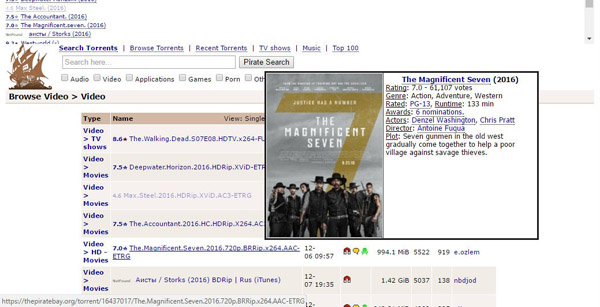
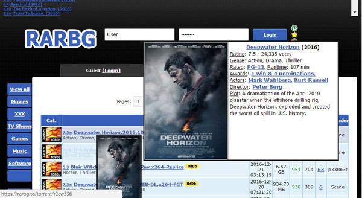
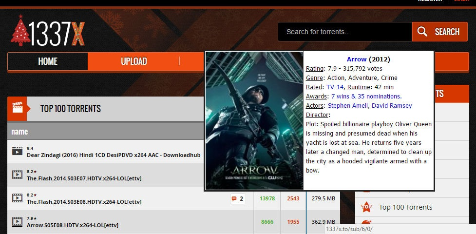
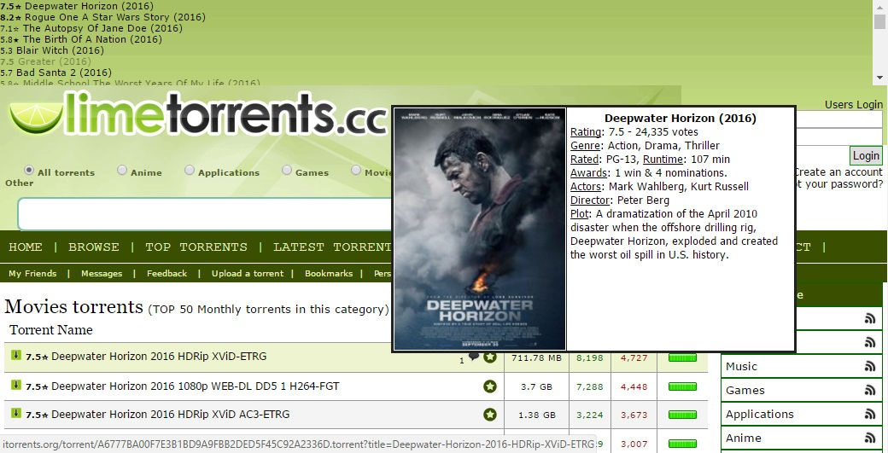
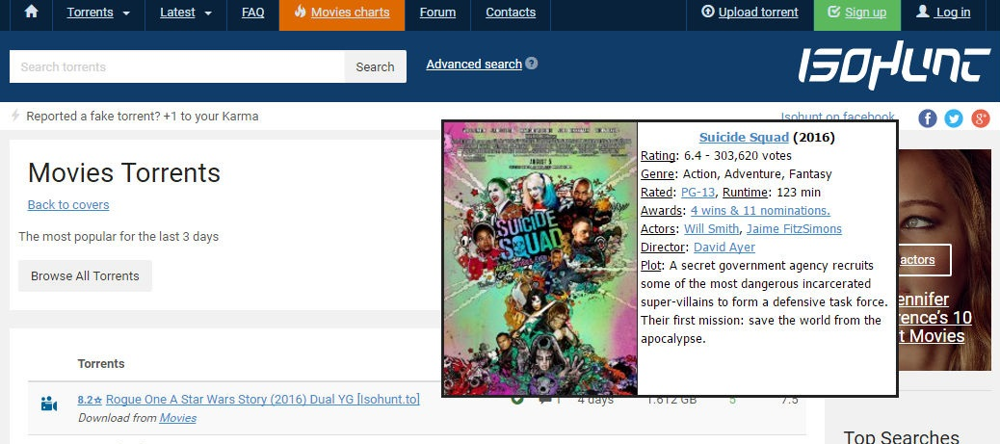

Show info of movies/series's (rating, poster, actors, ...) from IMDB on almost any torrent domain (thepiratebay, *torrent* , ...) as well as showing .torrent download links from any magnet:?url





----------------------------
Source: repository@github
Try it. Then if you like it, Share it.
----------------------------
Please report any bugs, problems or suggestions: issues@github or email: hossam.magdy [at] ieee.org